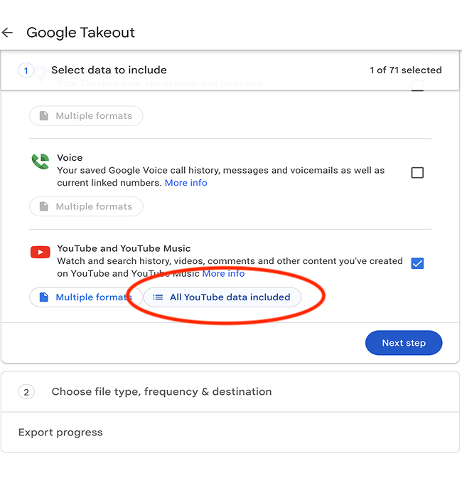
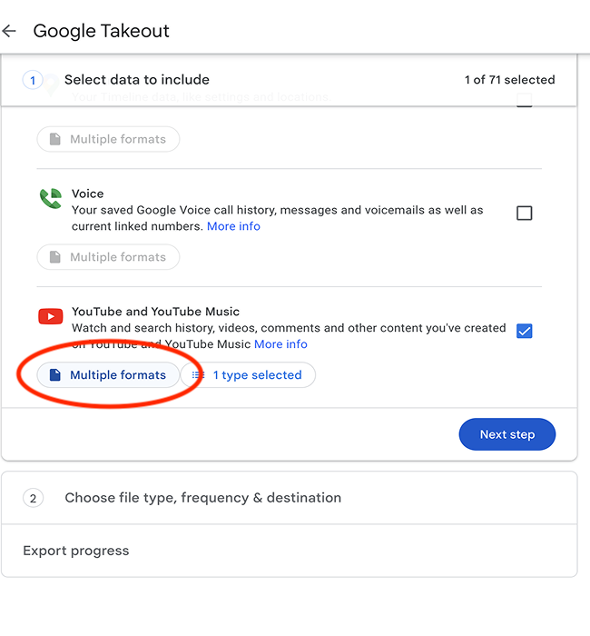
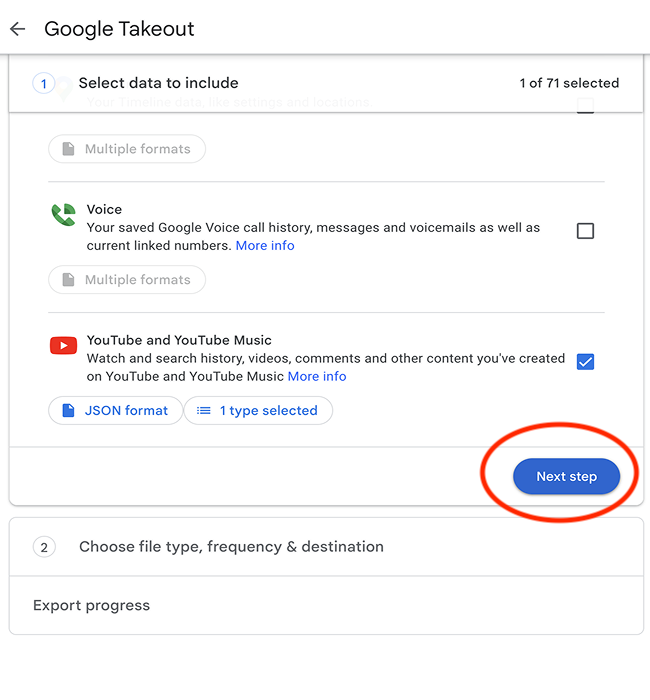

1. Navigate to Takeout
2. Deselect all
3. Select YouTube and Youtube Music
4. Click all youtube data included 
5. Deselect all, but history
6. Click multiple formats 
7. Change history to JSON
8. Next step 
9. Export